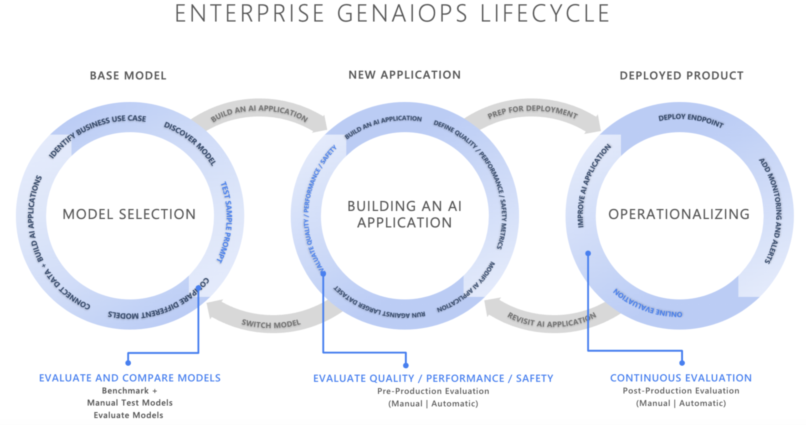
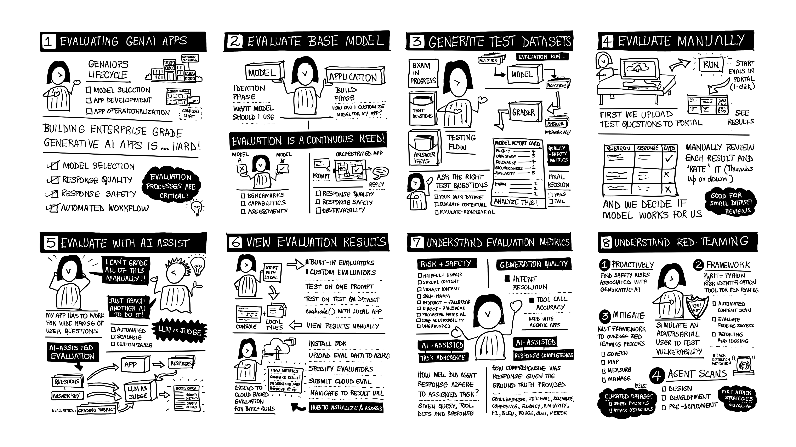

1. Overview¶
BY THE END OF THIS SECTION YOU SHOULD BE ABLE TO
- Explain the role of evaluations in the GenAIOps lifecycle
- Understand the key tools and capabilities of the Azure AI Evaluations SDK
- Understand how to apply these learnings to a relevant application scenario
IN-VENUE LEARNERS: Skip to the next section! This content was covered by instructors
Introduction¶
Generative AI Operations (GenAIOps), refers to the practice of managing, evaluating, and improving generative AI systems to ensure they produce trustworthy, reliable, and safe outputs throughout their lifecycle. The GenAIOps cycle can be viewed as 3 stages:
- Model Selection - the first step is to find the right model for your needs
- App Development - the next step is to customize model behavior to suit requirements
- Operationalization - the last step is to monitor and optimize apps in production

Evaluations are critical to this process, helping us gain user confidence and trust in the quality and safety of our applications at each step:
- Model Selection - use a relevant dataset to evaluate models for fit
- App Development - use built-in and custom evaluators to assess quality and safety
- Operationalization - use tools to analyze results and optimize apps continuously
Application Scenario¶
Understanding complex concepts is easier if we have an application scenario that we can use to contextualize the discussion. Let's revisit this popular application scenario. Contoso Outdoors is a fictional enterprise retailer that sells outdoor hiking and camping equipment on their website. The figure shows a mockup of that experience.

The popularity of the site has created a bottleneck for customer support. So they have asked you to build Contoso Chat - a RAG-based retail copilot that can answer questions grounded in the product catalog and customer purchase history.

NOTE: This workshop does NOT build Contoso Chat.
We are using the application scenario to frame the discussion on evaluation in a real-world context. However, each lab will use a toy dataset or app to teach the tools, metrics, and processes for evaluation. If you are interested in learning to build Contoso Chat as an application, check out our previous AI Tour Workshops for details.
You are a new hire in that team - and you are tasked with the following:
- Model Selection - find us the right model to use for the job
- Evaluation Dataset - get us the right dataset to use for evaluations
- Evaluation Metrics - identify evaluators we should use for quality & safety
- Custom Evaluators - identify gaps in evaluation metrics that we should fill
What do you do? Let's take you on the developer journey for evaluation.
Developer Journey¶
The storyboard below visualizes the typical developer journey into evaluations. In this lab, we will cover many of these elements in the Workshop track - and provide bonus labs in the Homework track to help you continue the learning journey.

Setup: Create AI Project¶
Our application scenario requires model responses to be grounded in data. We will:
- Setup an Azure AI project with an Azure AI Search resource connected
- Upload our data and establish a search index for knowledge retrieval
- We are now ready to take the next step in our GenAIOps workflow
In Lab 334, we'll use a deployed version of Contoso Chat as our default Azure AI Foundry project
Step 1: Evaluate Base Models¶
Next, we need to select the right model to prototype our application. We can:
- Deploy one or more models from the model catalog to choose from
- Use the default benchmarks to compare and filter down the choices
- Use manual evaluations to assess responses against test prompts - without code!
- We can also use code-first approaches to compare models from code
At the end of this step, you should have selected your chat model for app prototyping
Step 2: Create Test Dataset¶
Next, we need a way to assess the quality and safety of our application prototype, as we develop it. Because these AI models are stochastic, we need to test them with a broad set of relevant "test prompts" to make sure they follow the guidelines we provide for responses.
You have three options:
- Bring your own data - the problem is most applications don't have historical query data.
- Create data manually - the problem is this requires non-trivial effort and has coverage gaps.
- Use a simulator - the Azure AI Evalution SDK creates synthetic dataset from search indexes.
- Use adversarial simulators - create synthetic datasets that test the safety of app responses.
At the end of this step, you should have an evaluation dataset you can use consistently
Step 3: Evaluate Metrics¶
Next, we need criteria that we can use to rate the quality and safety of generated responses.
- Use built-in quality evaluators - use standard metrics (coherence, groundedness, relevance)
- Use built-in safety evaluators - use standard metrics to detect harmful, protected content etc.
- View results for insights - use portal-based dashboards to visualize and analyze results
At the end of this step, you should have an evaluation workflow that can run on each app iteration
Step 4: Customize Metrics¶
Does your application require custom assessments outside the scope of built-in evaluators?
- Create custom evaluators - create custom prompt templates to "judge" model responses
- Use custom evaluators - combine built-in and custom evaluators in your evaluation workflows
At the end of this step, you should have filled any assessment gaps from built-in metrics
Step 5: Operationize It¶
Think about how these evaluations can be automated to streamline usage in production:
- Red teaming agents - proactively assess safety vulnerabilities in your application
- Content filters - customize the safety levels for your application, for various categories
- Monitoring - activate tracing and get application insights for optimization and debugging
At the end of this step, you should be able to iterate on apps in production
References¶
Because of time-constraints, we will only cover a subset of these steps today. But we encourage you to explore more samples and tutorials using these references
These references provide additional context and detailed guidance on the tools and techniques covered in this lab.